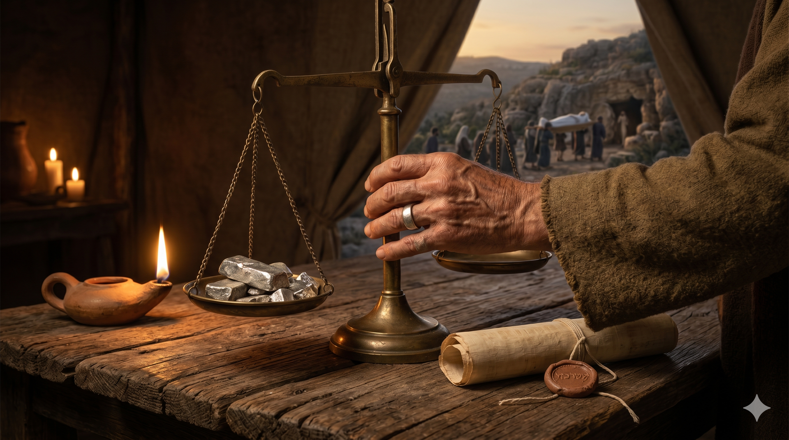

헤브론의 저물녘, 사라의 장막 곁에서 얼굴을 가리고 울고 있는 아브라함. 멀리 막벨라의 들판과 한 그루 상수리나무, 그리고 그의 뒤에 서 있는 헷 족속의 사람들 — 슬픔 속에서도 약속의 땅에 남길 첫 표지를 바라보는 순례자의 눈빛.
사라가 백이십칠 세를 살았으니 이것이 곧 사라가 누린 햇수라 사라가 가나안 땅 헤브론 곧 기럇아르바에서 죽으매 아브라함이 들어가서 사라를 위하여 슬퍼하며 애통하다가 … 아브라함이 일어나 그 앞 곧 헷 족속 앞에 몸을 굽히고 그들에게 말하여 이르되 나는 당신들 중에 나그네요 거류하는 자이니 당신들 중에서 내게 매장할 소유지를 주어 내가 나의 죽은 자를 내 앞에서 내어 장사하게 하시오 … 이와 같이 그 밭과 거기에 속한 굴이 헷 족속으로부터 아브라함이 매장할 소유지로 확정되었더라 — 창세기 23:1–4, 20
모리아 산의 영광스러운 장면 뒤에 성경은 조용하고 무거운 한 장을 둡니다. 사라가 127세로 세상을 떠납니다. 성경에서 여인의 나이가 명시되어 기록된 사람은 사라가 유일합니다. 그 한 줄의 숫자 안에 그녀가 아브라함과 함께 걸었던 부르심의 여정, 웃음과 불안, 이삭의 탄생, 그리고 끝까지 약속을 붙잡았던 한 생이 담겨 있습니다. 아브라함은 장막 바깥에 앉아 있지 않고 "들어가서" 슬퍼합니다. 믿음의 사람도 슬픔을 숨기지 않습니다. 그는 울었습니다. 그리고 그 눈물 뒤에, 몸을 일으켜 한 가지 일을 해야 했습니다 — 약속의 땅 한 조각을 사야 했습니다.
헷 족속은 그를 존경하여 "당신 중에 어느 묘실에든지 장사하소서" 라고 했지만 아브라함은 공짜 호의를 거절합니다. 그는 에브론에게 "막벨라 굴을 제 값대로 내게 팔라" 고 말합니다. 에브론이 에둘러 "사백 세겔 짜리 땅이 무슨 문제이겠습니까?" 라 말하자 아브라함은 말없이 은 사백 세겔을 상인이 통용하는 무게로 달아 주었습니다. 이것은 단순한 거래가 아니었습니다. 하나님께서 "이 땅을 너에게 주리라" 하신 그 땅에서, 아브라함이 공식적으로 소유한 첫 번째 조각 — 그것이 바로 아내의 무덤이었습니다. 약속의 성취는 화려한 궁성이 아니라 한 평의 무덤에서 시작되었습니다. 이방인이요 거류자인 그의 한 손에 처음 쥐어진 기업은, 사랑하는 이를 눕힐 흙이었습니다.

막벨라의 굴, 사라의 관이 내려지는 황혼의 들판. 은전의 무게를 조용히 달고 있는 저울, 그리고 그 손에 쥐어진 한 조각 약속의 땅.
믿음의 길을 걸어도 사별은 옵니다. 아브라함도 울었고, 예수님도 나사로의 무덤에서 우셨습니다. 울지 않으려 애쓰지 마십시오. 다만 울고 난 다음, 몸을 일으켜 해야 할 일을 하시면 됩니다. 아브라함에게 그 일은 "땅을 사는 일"이었습니다 — 사랑하던 이를 약속의 땅에 눕히는 일. 오늘 당신에게도 슬픔 이후의 실천이 있습니다. 장례를 준비하는 손, 남은 가족을 돌아보는 전화 한 통, 무너진 자리에서도 하루의 밥상을 차리는 한 끼의 수고 — 그것이 신앙의 무덤 위에 세워지는 조용한 제단입니다.
아브라함은 "나는 당신들 중에 나그네요 거류하는 자이니" 라고 자신을 소개했습니다. 하나님의 사람은 세상 한가운데 살면서도 자신이 "지나가는 사람" 임을 잊지 않습니다. 그러나 나그네라고 해서 땅 한 평 갖지 못하고 떠나는 것은 아닙니다. 아브라함은 그 나그넷길 위에서 아내의 무덤을 위해 정확한 값을 지불했습니다. 믿음은 현실을 피하지 않습니다. 공짜 호의에 얹히는 신앙이 아니라, 정직하게 값을 치르며 땅에 한 자락을 남기는 신앙입니다. 오늘 당신의 자리에서도 성실하게 "제 값을 지불하며" 살아가십시오 — 그 무덤 같은 자리가 어느 날, 아브라함의 막벨라처럼 약속의 첫 증거가 될 것입니다.
약속의 땅에 남긴 아브라함의 첫 소유는 아내의 무덤이었습니다.
슬픔 뒤에도 몸을 일으켜 한 걸음을 걸으십시오.
당신의 눈물 위에 하나님은 약속의 첫 표지를 세우실 것입니다.